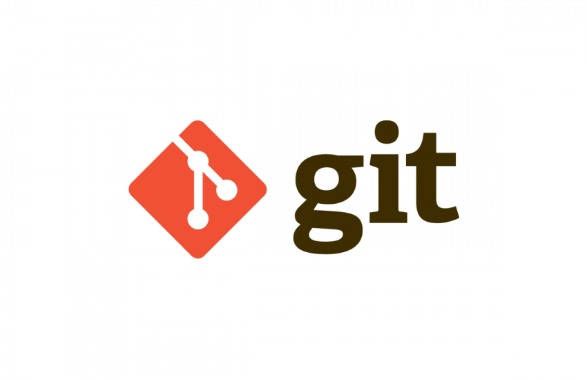

Git es un sistema de control de versiones distribuido; esto quiere decir que mantiene una copia local del repositorio completo.
Al disponer de un repositorio local, puedes hacer commit (enviar cambios al sistema de control de versiones) en local, sin necesidad de estar conectado a Internet o cualquier otra red.
Git tiene tres estados principales en los que se pueden encontrar tus archivos:
Confirmado (committed): Confirmado significa que los datos están almacenados de manera segura en tu base de datos local.
Modificado (modified): Modificado significa que has modificado el archivo pero todavía no lo has confirmado a tu base de datos.
Preparado (staged): Preparado significa que has marcado un archivo modificado en su versión actual para que vaya en tu próxima confirmación.

También consta de tres partes
Working directory: empezamos a trabajar con nuestros archivos de código pero aún no se han añadido la siguiente fase para llevar un seguimiento de los mismos.
Staging area: aquí ya tenemos los archivos listos para crear una revisión o commit.
Repository: los commit son almacenados en un repositorio, por defecto local, pero podemos usar nubes como github para tener un repositorio remoto con nuestro código.
Los comandos más utilizados en GitHub son:
git init: La palabra init significa inicializar. El comando configura todas las herramientas que Git necesita para comenzar a rastrear los cambios realizados en un proyecto existente.
git status: El comando te dice en qué rama estás. Por ahora, esa rama siempre es “master”, que es la predeterminada.
git commit: Este hace una confirmación que almacena permanentemente los cambios del área de preparación dentro del repositorio. Sin embargo, se necesita un bit más de código para un commit: la opción “-m” seguida de un mensaje.